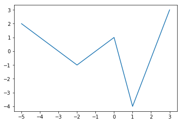
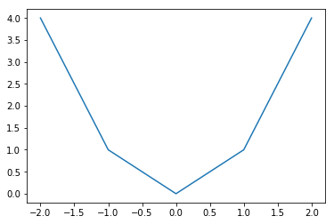
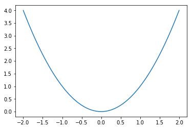
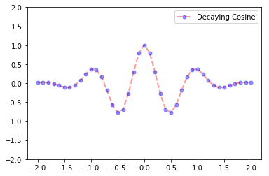
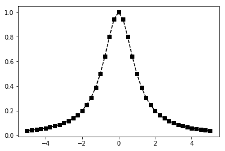
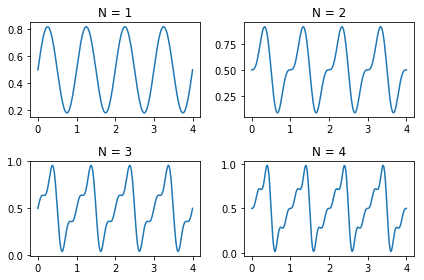
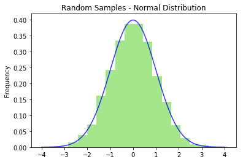
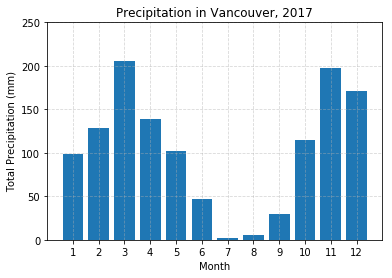

Matplotlib
Matplotlib is a Python package for 2D plotting and the matplotlib.pyplot sub-module contains many plotting functions to create various kinds of plots. Let's get started by importing matplotlib.pyplot.
import numpy as np
import matplotlib.pyplot as plt
Basic Plotting
Procedure
The general procedure to create a 2D line plot is:
- Create a sequence of $x$ values.
- Create a sequence of $y$ values.
- Enter
plt.plot(x,y,[fmt],**kwargs)where[fmt]is a (optional) format string and**kwargsare (optional) keyword arguments specifying line properties of the plot. - Use
pyplotfunctions to add features to the figure such as a title, legend, grid lines, etc. - Enter
plt.show()to display the resulting figure.
Let's begin with a basic example with a few random points:
x = [-5,-2,0,1,3]
y = [2,-1,1,-4,3]
plt.plot(x,y)
plt.show()

The main things to notice are:
- The sequences
xandydefine the coordinates of the points in the plot. - The line in the plot is constructed by connecting the points by straight lines.
The second observation implies that if we want to plot a smooth curve then we need to plot lots of points otherwise the plot will not be smooth. For example, we could try plotting the parabola $y = x^2$ for $x \in [-2,2]$ using only 5 points:
x = [-2,-1,0,1,2]
y = [4,1,0,1,4]
plt.plot(x,y)
plt.show()

This is too few points to plot a smooth curve such as $y = x^2$ and so we need more points! Let's try again using the NumPy function np.linspace to create 100 points!
x = np.linspace(-2,2,100)
y = x**2
plt.plot(x,y)
plt.show()

That's a better representation of the parabola $y = x^2$. Note that the number of points we use in a line plot (100 in this case) is completely arbitrary but the goal is to show a smooth graph for a smooth curve and so we just need to pick a big enough number depending on the function. But be careful not to generate too many points since a very large number of points will take a long time to plot!
Now that we have the general idea, let's look at adding style and features to our plots!
Line Properties
A line appearing in a plot has several properties including color, transparency, style, width and markers. We can set these properties when we call plt.plot using the following keyword arguments:
| Property | Description |
|---|---|
alpha |
transparency (0.0 transparent through 1.0 opaque) |
color (or c) |
any matplotlib color |
label |
text appearing in legend |
linestyle (or ls) |
solid, dashed, dashdot, dotted |
linewidth (or lw) |
set width of the line |
marker |
set marker style |
markeredgecolor (or mec) |
any matplotlib color |
markerfacecolor (or mfc) |
any matplotlib color |
markersize (or ms) |
size of the marker |
Note that we can specify a matplotlib color in several different ways including by name such as blue or red, or by a RGB tuple such as (1,0,1) for purple. For example, let's plot the function
$$ y = e^{-x^2}\cos(2 \pi x) \ \ , \ \ x \in [-2,2] $$
x = np.linspace(-2,2,41)
y = np.exp(-x**2) * np.cos(2*np.pi*x)
plt.plot(x,y,alpha=0.4,label='Decaying Cosine',
color='red',linestyle='dashed',linewidth=2,
marker='o',markersize=5,markerfacecolor='blue',
markeredgecolor='blue')
plt.ylim([-2,2])
plt.legend()
plt.show()

Notice that we used the pyplot function plt.legend to display the figure with a legend (showing the line label) and and plt.ylim to set the limits on the vertical axis to [-2,2].
Format Strings
A format string gives us a shortcut to add color, markers and line style to a line plot. For example, if we want to plot the function
$$ y = \frac{1}{1 + x^2} \ , \ x \in [-5,5] $$
with a dashed black line and square markers, we could use keyword arguments:
x = np.linspace(-5,5,41)
y = 1/(1 + x**2)
plt.plot(x,y,color='black',linestyle='dashed',marker='s')
plt.show()

Or we could use the corresponding format string 'ks--' where k denotes a black line, s a square marker and -- a dashed line:
x = np.linspace(-5,5,41)
y = 1/(1 + x**2)
plt.plot(x,y,'ks--')
plt.show()

Much easier! See below for a list of colors, markers and linestyles.
Colors
| Character | Color |
|---|---|
b |
blue |
g |
green |
r |
red |
c |
cyan |
m |
magenta |
y |
yellow |
k |
black |
w |
white |
Markers
| Character | Marker |
|---|---|
. |
point |
o |
circle |
v |
triangle down |
^ |
triangle up |
s |
square |
p |
pentagon |
* |
star |
+ |
plus |
x |
x |
D |
diamond |
Line Styles
| Character | Line Style |
|---|---|
- |
solid line style |
-- |
dashed line style |
-. |
dash-dot line style |
: |
dotted line style |
See the matplotlib.pyplot.plot documentation for more options.
Pyplot Functions
There are many pyplot functions available for us to customize our figures. For example:
| Fucntion | Description |
|---|---|
plt.xlim |
set $x$ limits |
plt.ylim |
set $y$ limits |
plt.grid |
add grid lines |
plt.title |
add a title |
plt.xlabel |
add label to the horizontal axis |
plt.ylabel |
add label to the vertical axis |
plt.axis |
set axis properties (equal, off, scaled, etc.) |
plt.xticks |
set tick locations on the horizontal axis |
plt.yticks |
set tick locations on the vertical axis |
plt.legend |
display legend for several lines in the same figure |
plt.savefig |
save figure (as .png, .pdf, etc.) to working directory |
plt.figure |
create a new figure and set its properties |
See the pyplot documentation for a full list of functions.
Examples
Taylor Polynomials
Plot the function $y = \cos(x)$ along with its Taylor polynomials of degrees 2 and 4.
x = np.linspace(-6,6,50)
# Plot y = cos(x)
y = np.cos(x)
plt.plot(x,y,'b',label='cos(x)')
# Plot degree 2 Taylor polynomial
y2 = 1 - x**2/2
plt.plot(x,y2,'r-.',label='Degree 2')
# Plot degree 4 Taylor polynomial
y4 = 1 - x**2/2 + x**4/24
plt.plot(x,y4,'g:',label='Degree 4')
# Add features to our figure
plt.legend()
plt.grid(True,linestyle=':')
plt.xlim([-6,6])
plt.ylim([-4,4])
plt.title('Taylor Polynomials of cos(x) at x=0')
plt.xlabel('x')
plt.ylabel('y')
plt.show()

Heart Curve
Plot the heart curve:
\begin{align} x &= 16 \sin^3(t) \\ y &= 13 \cos(t) - 5 \cos(2t) - 2 \cos(3t) - \cos(4t) \end{align}
for $t \in [0,2\pi]$.
t = np.linspace(0,2*np.pi,100)
x = 16*np.sin(t)**3
y = 13*np.cos(t) - 5*np.cos(2*t) - 2*np.cos(3*t) - np.cos(4*t)
# Plot line with RGB tuple (red=1, green=0.2, blue=0.5)
# and 20pt line width
plt.plot(x,y,c=(1,0.2,0.5),lw=20)
# Add features to our figure
plt.title('Heart!')
plt.axis('equal')
plt.axis('off')
plt.show()
Subplots
The plt.subplot function takes at least 3 inputs $n$, $m$ and $i$ and creates a figure with a $n$ by $m$ grid of subplots and then sets the $i$th subplot (counting across the rows) as the current plot (ie. current axes object).
For example, consider the sawtooth wave
$$ f(t) = \frac{1}{2} - \frac{1}{\pi} \sum_{k=1}^{\infty} (-1)^k \frac{\sin(2 \pi k t)}{k} $$
and let $f_N(t)$ denote the $N$th partial sum of the sawtooth wave:
$$ f_N(t) = \frac{1}{2} - \frac{1}{\pi} \sum_{k=1}^{N} (-1)^k \frac{\sin(2 \pi k t)}{k} $$
Create a 2 by 2 grid of subplots to plot the first 4 partial sums:
\begin{align} f_1(t) &= \frac{1}{2} + \frac{\sin(2 \pi t)}{\pi} \\ f_2(t) &= \frac{1}{2} + \frac{\sin(2 \pi t)}{\pi} - \frac{\sin(4 \pi t)}{2\pi} \\ f_3(t) &= \frac{1}{2} + \frac{\sin(2 \pi t)}{\pi} - \frac{\sin(4 \pi t)}{2\pi} + \frac{\sin(6 \pi t)}{3\pi} \\ f_4(t) &= \frac{1}{2} + \frac{\sin(2 \pi t)}{\pi} - \frac{\sin(4 \pi t)}{2\pi} + \frac{\sin(6 \pi t)}{3\pi} - \frac{\sin(8 \pi t)}{4\pi} \end{align}
t = np.linspace(0,4,200)
fN = 1/2
for N in [1,2,3,4]:
fN = fN - (-1)**N * np.sin(2*N*np.pi*t)/(N*np.pi)
plt.subplot(2,2,N)
plt.plot(t,fN)
plt.title('N = {}'.format(N))
plt.tight_layout()
plt.show()

See the documentation for more about subplots.
Beyond Line Plots
Scatter plots
A scatter plot has 4 dimensions: $x$ coordinate, $y$ coordinate, size and color. Let's make a random scatter plot:
# Set the number of dots in the plot
N = 2000
# Create random x and y coordinates sampled uniformly from [0,1]
x = np.random.rand(N)
y = np.random.rand(N)
# Create random array sampled uniformly from [20,120]
# `size` array is used below to set the size of each dot
size = 100*np.random.rand(N) + 20
# Create random 4-tuples sampled uniformly from [0,1]
# `colors` array is used below to set the color
# (red,green,blue,alpha) of each dot
colors = np.random.rand(N,4)
# Create a figure of size 12 by 5 and create scatter plot
plt.figure(figsize=(12,5))
plt.scatter(x,y,c=colors,s=size)
plt.axis('off')
plt.show()

Histograms
Generate an array of 10000 random numbers sampled from the normal distribution and create a histogram. Let's also superimpose the normal distribution:
$$ y = \frac{1}{\sqrt{2\pi}} e^{-x^2/2} $$
samples = np.random.randn(10000)
plt.hist(samples,bins=20,density=True,alpha=0.5,color=(0.3,0.8,0.1))
plt.title('Random Samples - Normal Distribution')
plt.ylabel('Frequency')
x = np.linspace(-4,4,100)
y = 1/(2*np.pi)**0.5 * np.exp(-x**2/2)
plt.plot(x,y,'b',alpha=0.8)
plt.show()

Bar plots
Plot the total precipitation in Vancouver by month as a bar plot:
month = range(1,13)
precipitation = [98.8,128.8,206.0,138.5,102.2,46.4,1.8,5.0,29.4,114.8,197.0,170.6]
plt.bar(month,precipitation)
plt.xticks(month)
plt.yticks(range(0,300,50))
plt.grid(True,alpha=0.5,linestyle='--')
plt.title('Precipitation in Vancouver, 2017')
plt.ylabel('Total Precipitation (mm)')
plt.xlabel('Month')
plt.show()

Figure and Axes Objects
Under construction
Exercises
Exercise 1. Plot the following functions:
- $f(x) = \sqrt{|x|}$, $x \in [-9,9]$
- $f(x) = \sin(x) + \sin(2x)$, $x \in [0,4\pi]$
- $f(x) = \arctan(x)$, $x \in [-5,5]$
- $f(x) = 2x\ln|x|$, $x \not=0$, $f(0)=0$, $x \in [-1,1]$
- $f(x) = (x+2)(x+1)(x-1)(x-2)(x - 3)$, $x \in [-2,3]$
- $f(x) = e^{-x^2}$, $x \in [-2,2]$
Exercise 2. Plot the figure eight curve:
\begin{align} x &= \sin(t) \\ y &= \sin(t) \cos(t) \end{align}
for $t \in [0,2\pi]$.
Exercise 3. Plot the trefoil knot:
\begin{align} x &= \sin t + 2 \sin 2t \\ y &= \cos t - 2 \cos 2t \end{align}
for $t \in [0,2\pi]$.
Exercise 4. Plot the butterfly curve:
\begin{align} x &= \sin(t) \left( e^{\cos t } - 2 \cos(4t) - \sin^5(t/12) \right) \\ y &= \cos(t) \left( e^{\cos t } - 2 \cos(4t) - \sin^5(t/12) \right) \end{align}
for $t \in [0,100]$.
Exercise 5. Write a function called parametric_plots which takes input parameters a and k and plots the parametric equation
\begin{align} x(t) &= 2 k \cos(t) - a \cos(k t) \\ y(t) &= 2 k \sin(t) - a \sin(k t) \end{align}
for $t \in [0,2\pi]$. Include a title for each subplot to display the values for $a$ and $k$, and use plt.axis('equal') to display the curve properly.